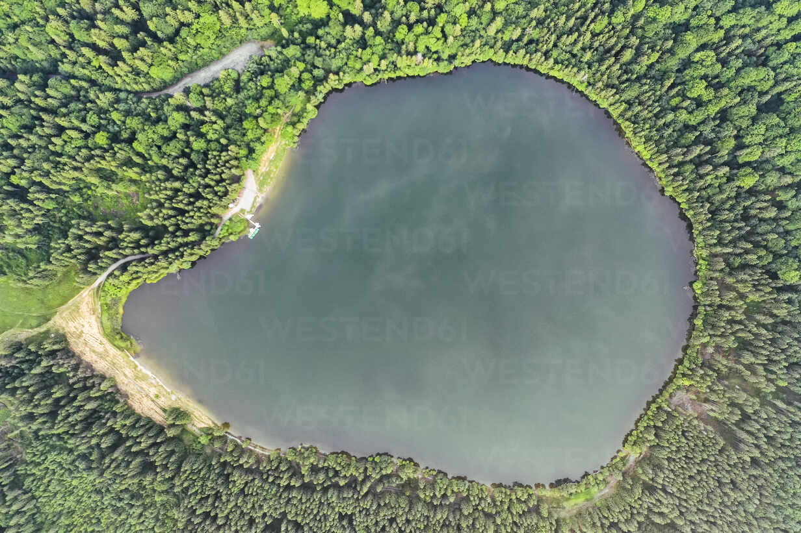

<!-- book-main.component.html -->

<div class="container">
  <div class="image-container">
    

    <!-- Assuming the parent container has a specific size -->
    <div *ngFor="let location of locations" class="clickable-spot" (click)="openSpotInfoModal(location.id)"
         [style.left.%]="location.leftPercentage" [style.top.%]="location.topPercentage">
      
    </div>
  </div>

  <!-- Spot Information Modal content -->
  <div *ngIf="spotInfo" class="modal fade show" style="display: block;" tabindex="-1">
    <div class="modal-dialog modal-lg">
      <div class="modal-content">
        <div class="modal-header">
          <h4 class="modal-title">Spot Information</h4>
          <button type="button" class="close" aria-label="Close" (click)="closeSpotInfoModal()">
            <span aria-hidden="true">&times;</span>
          </button>
        </div>
        <div class="modal-body">
          <p>Hely száma: {{ spotInfo?.helySzama }}</p>
          <p>Hely leírása: {{ spotInfo?.helyLeirasa }}</p>

          <!-- Slideshow with images from the database -->
          <div *ngIf="spotInfo?.slideshowImages && spotInfo?.slideshowImages.length > 0">
            <h5>Slideshow</h5>
            <div *ngFor="let image of spotInfo.slideshowImages">
              
            </div>
          </div>
        </div>
        <div class="modal-footer">
          <button routerLink="/bookform" class="btn btn-primary">Lefoglalom</button>
          <button type="button" class="btn btn-secondary" (click)="closeSpotInfoModal()">Close</button>
        </div>
      </div>
    </div>
  </div>
</div>
